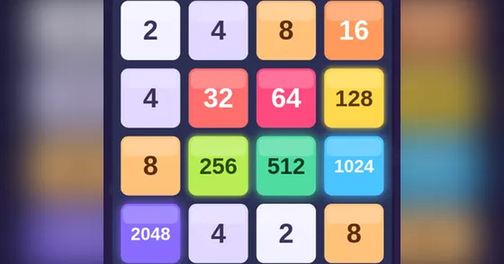

2048
2048
퍼즐 · 숫자무료설치 없음폰 · PC
▶ 지금 바로 하기로그인 없이 브라우저에서 바로 시작돼요
어떤 게임인가요?
화면을 밀면 모든 숫자가 그쪽으로 미끄러지고, 같은 숫자가 부딪히면 하나로 합쳐져요. 2 → 4 → 8 … 2048까지! 칸이 꽉 차서 못 움직이면 끝.
목표 · 숫자 타일을 밀어 같은 숫자끼리 합치며 2048 타일을 만들고, 최대한 높은 점수를 노리세요.
이렇게도 찾아요
2048 게임숫자 합치기숫자 퍼즐20482048 gamenumber merge
#2048 #숫자퍼즐 #두뇌게임
게임 방법
- 화면을 한 방향으로 밀면 모든 타일이 그쪽 끝까지 미끄러져요.
- 같은 숫자 타일 두 개가 부딪히면 하나로 합쳐지고 숫자가 두 배가 돼요. 합친 숫자만큼 점수.
- 한 번 밀 때마다 빈칸에 2(가끔 4)가 하나 생겨요.
- 한 번 밀 때 이미 합쳐진 타일은 다시 합쳐지지 않아요.
- 칸이 꽉 차고 합칠 것이 없으면 끝. 2048을 만든 뒤에도 계속할 수 있어요.
등장하는 것들
- 2 · 4 · 새로 생기는 타일
- 128 이상 · 빛나는 큰 타일
- 2048 · 목표!
공략 팁
- 가장 큰 타일을 한쪽 구석에 고정하세요.
- 그 구석 쪽 두 방향 위주로만 밀고, 반대 방향은 아껴 두세요.
- 큰 타일 옆줄을 꽉 채워 두면 갑자기 빈칸이 생기지 않아요.
이런 게임도 있어요
 색실 잇기잇기 퍼즐 · 수집
색실 잇기잇기 퍼즐 · 수집 윷놀이전통 놀이 · 1P/2P
윷놀이전통 놀이 · 1P/2P 방울 터뜨리기퍼즐 · 조준
방울 터뜨리기퍼즐 · 조준 사과 10 만들기퍼즐 · 두뇌 · 2분
사과 10 만들기퍼즐 · 두뇌 · 2분 타자 게임 · 낱말 비타자 연습 · 키보드
타자 게임 · 낱말 비타자 연습 · 키보드 무당벌레 미로미로 · 추격
무당벌레 미로미로 · 추격